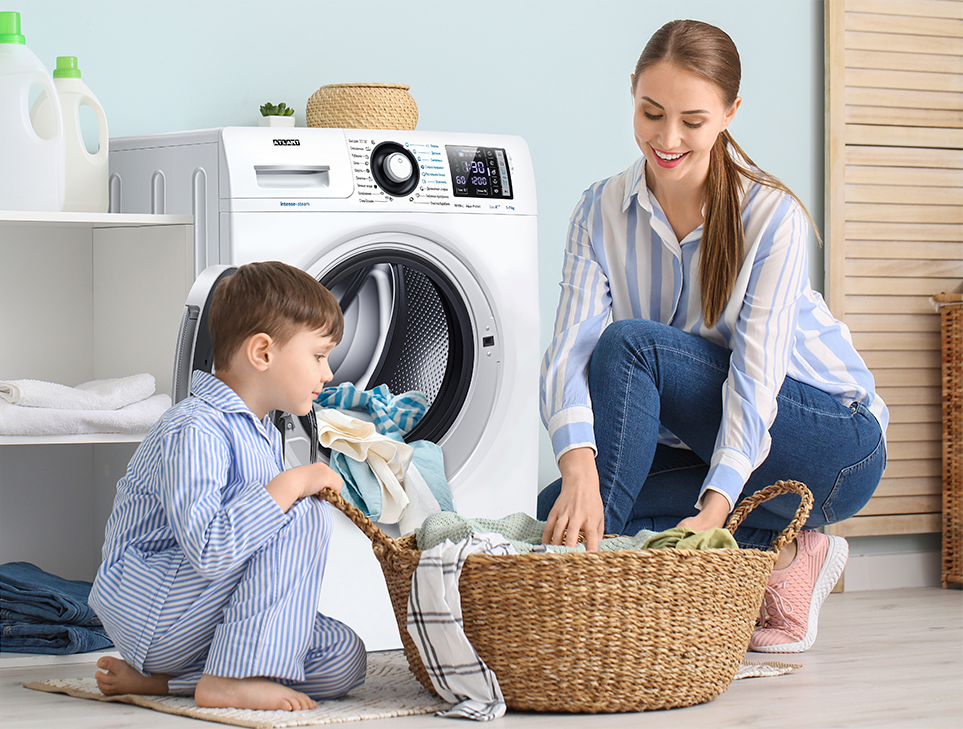
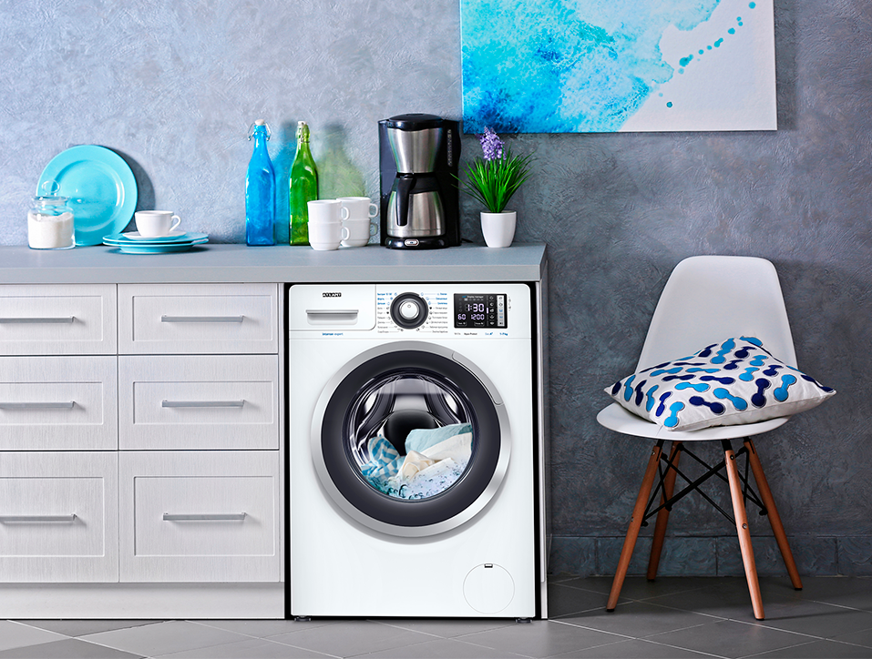
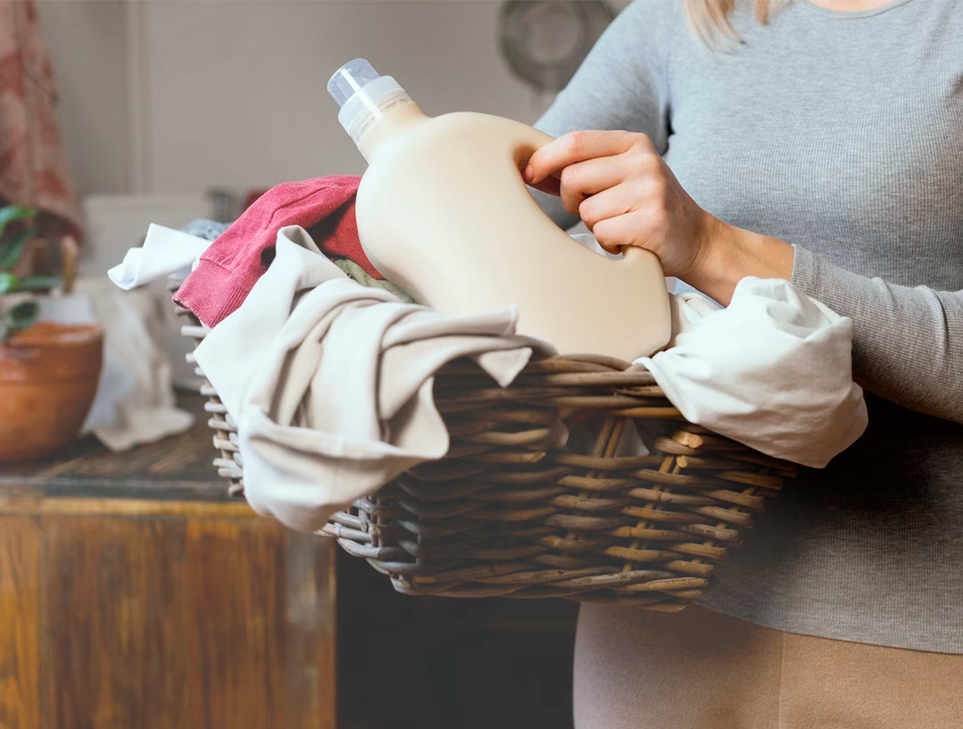
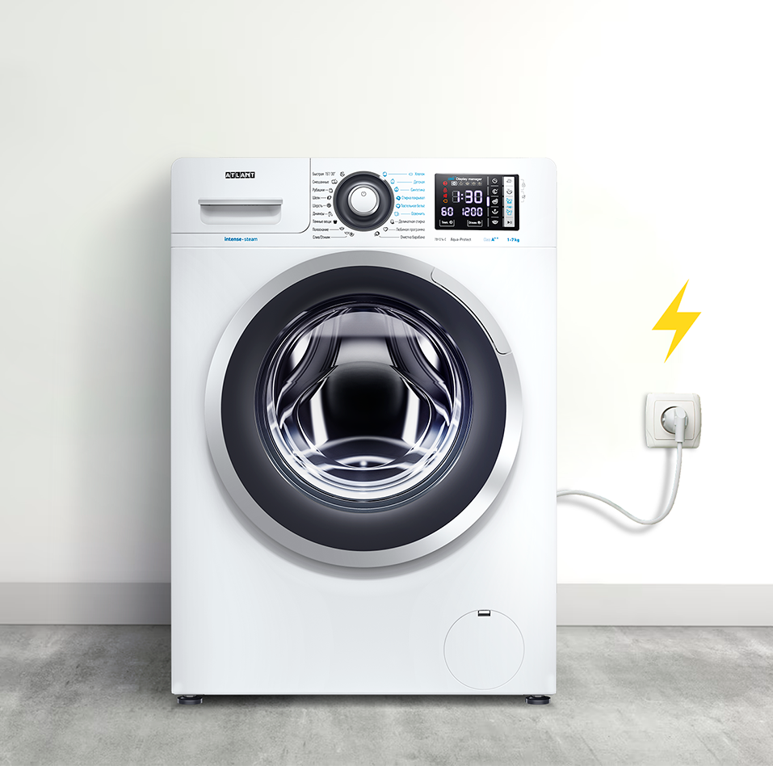
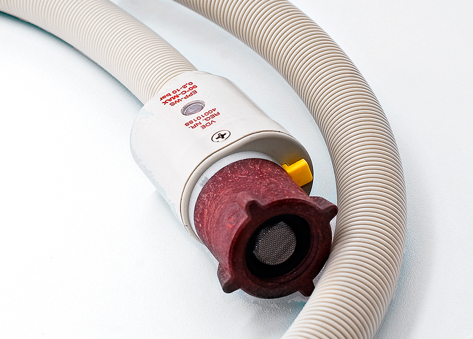

Cтиральные машины ATLANT
серии INTENSE STEAM
с технологией пара

Дозагрузка белья
Позволяет дозагрузить белье после остановки, спустя 2-3 минуты
Дозагрузка белья в стиральных машинах ATLANT возможна за исключением программ, при выполнении которых используется повышенный уровень воды (например, программы “Шерсть”, “Ручная стирка”, “Комби”, “Шелк”). При этом, важно понимать, что дозагрузить вещи возможно, если уровень воды не выше нижнего края загрузочного отверстия. Только в этом случае датчики позволят открыть дверцу и дозагрузить белье.
Добавить воды
Позволяет повысить уровень воды
Во время стирки и при полоскании используйте эту опцию чтобы повысить эффективность выполаскивания белья.



замачивание
Функция предусмотрена для изделий из хлопковых тканей сильного загрязнения
Изделия выдерживаются в воде два часа с моющим средством (с периодическим переворачиванием), затем стираются по выбранной программе. При выбре функции с целью улучшения качества стирки одновременно включаются и функция предварительной стирки – загораются два соответствующих индикатора. Замачивание выполняется после окончания предварительной стирки, когда индикатор замачивания начинает мигать.
защита от перепадов в электрической сети
Стиральная машина сохраняет
работоспособности при
критических
перепадах напряжения в электрической сети
от 175 до 255 В
Критически важные компоненты стиральной машины защищены специальными предохранителями.
При возникновении экстремальной ситуации стиральная машина выключается.
Впоследствии, при возобновлении благоприятных условий, но не менее чем через 15 минут, стиральную
машину можно выключить, и она продолжит реализацию установленной программы с момента отключения.


система защиты от протечек
Система безопасности Aqua-Protect
При повреждении наливного шланга защитная система определяет утечку воды в нем и подача воды из водопровода в машину прекращается, стирка останавливается.